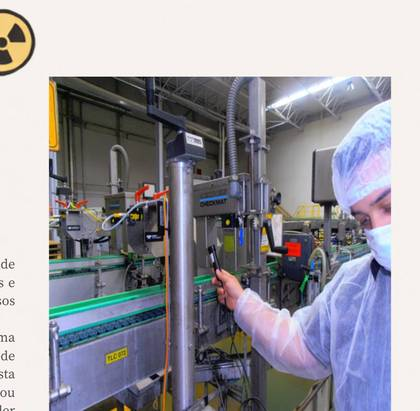

A evolução tecnológica resulta no desenvolvimento de novos equipamentos, sistemas mais automatizados e soluções cada vez mais integradas aos processos industriais.
Esse crescimento também traz uma responsabilidade importante: a necessidade de profissionais cada vez mais qualificados. Não basta conhecer o funcionamento de um equipamento; é preciso compreender os princípios envolvidos, reconhecer os riscos, conhecer os requisitos de radioproteção e saber tomar decisões diante das diferentes situações encontradas no ambiente de trabalho.
Normas são atualizadas, equipamentos são aprimorados, novas tecnologias surgem e o mercado passa a exigir competências diferentes. Manter-se em constante aprendizado é essencial para acompanhar uma área que não para de evoluir.
